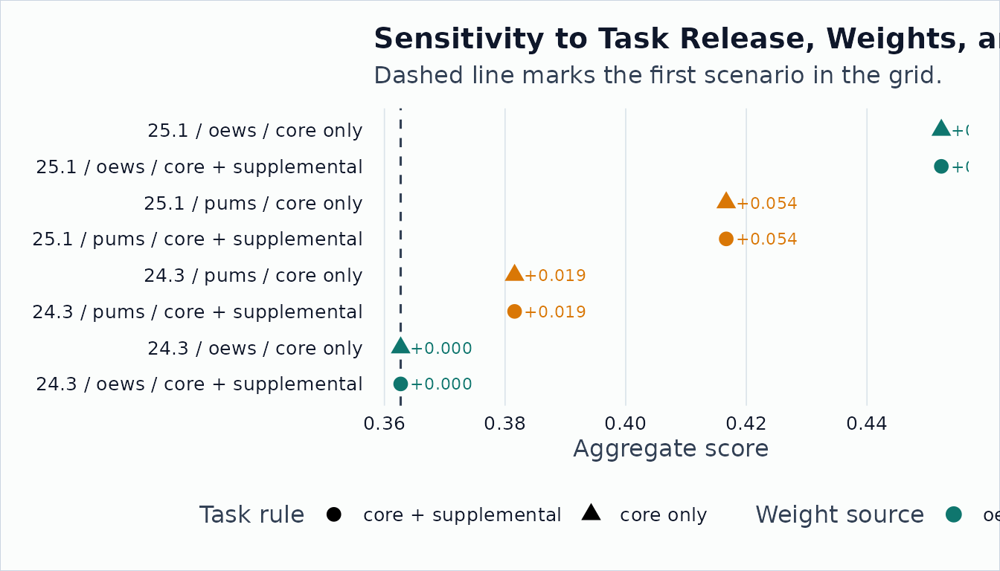

Stress-Testing a User-Supplied Exposure Measure
Source:vignettes/stress-testing-exposure-measure.Rmd
stress-testing-exposure-measure.RmdThis article uses a stylized task score to show the sensitivity workflow. The score is not a package-endorsed exposure measure. The package’s job is to show how much the headline number moves when non-substantive choices change.
Build the Measure from Task Files
tasks_243 <- onet_archive_read(
"24.3",
"Task Statements",
path = archive_path("24.3"),
release_date = "2020-08-01"
)
ratings_243 <- onet_archive_read(
"24.3",
"Task Ratings",
path = archive_path("24.3"),
release_date = "2020-08-01"
)
tasks_251 <- onet_archive_read(
"25.1",
"Task Statements",
path = archive_path("25.1"),
release_date = "2020-11-01"
)
ratings_251 <- onet_archive_read(
"25.1",
"Task Ratings",
path = archive_path("25.1"),
release_date = "2020-11-01"
)
task_scores <- tibble::tibble(
task_id = c("1101", "1201", "1202", "2101"),
score = c(0.75, 0.80, 0.55, 0.25)
)
measure <- onet_measure(
task_scores,
key = "task_id",
score = "score",
key_type = "task",
universe = unique(c(tasks_243$task_id, tasks_251$task_id)),
measure_id = "stylized_exposure",
release_version = "multi_release_fixture"
)
onet_coverage(measure) |>
onet_kable()| key_type | n_input | n_universe | n_matched | coverage_share | employment_coverage_share |
|---|---|---|---|---|---|
| task | 4 | 4 | 4 | 1 | NA |
Create Alternative Weight Panels
oews_weights <- onet_weight_panel_oews(
onet_oews_national(2024, path = oews_path),
year = 2024
)
pums <- tibble::tibble(
SOCP = c("151252", "151253", "291141", "291141"),
PWGTP = c(80, 120, 200, 80)
)
pums_weights <- onet_weight_panel_pums(pums, year = 2022)
oews_weights |>
onet_kable()| reference_soc_code | year | employment | weight_share | source | source_taxonomy | reference_taxonomy |
|---|---|---|---|---|---|---|
| 11-1011 | 2024 | 211230 | 0.040 | OEWS | 2018 SOC | 2018 SOC |
| 15-1252 | 2024 | 1847900 | 0.353 | OEWS | 2018 SOC | 2018 SOC |
| 29-1141 | 2024 | 3175400 | 0.607 | OEWS | 2018 SOC | 2018 SOC |
pums_weights |>
onet_kable()| reference_soc_code | year | employment | weight_share | source | source_taxonomy | reference_taxonomy |
|---|---|---|---|---|---|---|
| 15-1252 | 2022 | 80 | 0.167 | PUMS | 2018 SOC | 2018 SOC |
| 15-1253 | 2022 | 120 | 0.250 | PUMS | 2018 SOC | 2018 SOC |
| 29-1141 | 2022 | 280 | 0.583 | PUMS | 2018 SOC | 2018 SOC |
Run the Sensitivity Grid
bridge_2010_2019 <- tibble::tibble(
from_vintage = "mixed_fixture",
to_vintage = "2018 SOC",
from_onet_soc_code = c(
"15-1132.00",
"15-1132.00",
"15-1252.00",
"15-1253.00",
"29-1141.00"
),
to_onet_soc_code = c(
"15-1252.00",
"15-1253.00",
"15-1252.00",
"15-1253.00",
"29-1141.00"
),
map_type = c("split", "split", "one_to_one", "one_to_one", "one_to_one"),
crosswalk_weight = c(0.5, 0.5, 1, 1, 1)
)
sensitivity <- onet_measure_sensitivity(
measure,
weight_panels = list(oews = oews_weights, pums = pums_weights),
bridges = list(reference_bridge = bridge_2010_2019),
task_ratings = list(`2010-vintage 24.3` = ratings_243, `2019-vintage 25.1` = ratings_251),
task_metadata = list(`2010-vintage 24.3` = tasks_243, `2019-vintage 25.1` = tasks_251),
include_supplemental = c(FALSE, TRUE)
)
sensitivity |>
select(
scenario,
task_release,
soc_vintage,
weight_panel,
include_supplemental,
aggregate,
employment_coverage_share,
movement,
movement_percent
) |>
onet_kable()| scenario | task_release | soc_vintage | weight_panel | include_supplemental | aggregate | employment_coverage_share | movement | movement_percent |
|---|---|---|---|---|---|---|---|---|
| RT_core / 2010-vintage 24.3 / oews / reference_bridge | 24.3 | 2010 | oews | FALSE | 0.363 | 0.783 | 0.000 | 0.000 |
| RT_core / 2010-vintage 24.3 / pums / reference_bridge | 24.3 | 2010 | pums | FALSE | 0.382 | 0.792 | 0.019 | 0.052 |
| RT_core_plus_supplemental / 2010-vintage 24.3 / oews / reference_bridge | 24.3 | 2010 | oews | TRUE | 0.363 | 0.783 | 0.000 | 0.000 |
| RT_core_plus_supplemental / 2010-vintage 24.3 / pums / reference_bridge | 24.3 | 2010 | pums | TRUE | 0.382 | 0.792 | 0.019 | 0.052 |
| RT_core / 2019-vintage 25.1 / oews / reference_bridge | 25.1 | 2019 | oews | FALSE | 0.452 | 0.960 | 0.090 | 0.247 |
| RT_core / 2019-vintage 25.1 / pums / reference_bridge | 25.1 | 2019 | pums | FALSE | 0.417 | 1.000 | 0.054 | 0.149 |
| RT_core_plus_supplemental / 2019-vintage 25.1 / oews / reference_bridge | 25.1 | 2019 | oews | TRUE | 0.452 | 0.960 | 0.090 | 0.247 |
| RT_core_plus_supplemental / 2019-vintage 25.1 / pums / reference_bridge | 25.1 | 2019 | pums | TRUE | 0.417 | 1.000 | 0.054 | 0.149 |
plot_sensitivity <- sensitivity |>
mutate(
task_rule = if_else(include_supplemental, "core + supplemental", "core only"),
plot_label = paste0(task_release, " | ", weight_panel, " | ", task_rule)
)
ggplot2::ggplot(plot_sensitivity, ggplot2::aes(
x = aggregate,
y = stats::reorder(plot_label, aggregate),
color = weight_panel,
shape = task_rule
)) +
ggplot2::geom_vline(
xintercept = plot_sensitivity$baseline_aggregate[[1]],
color = onet2r_colors[["slate"]],
linetype = "dashed"
) +
ggplot2::geom_point(size = 3.6) +
ggplot2::scale_color_manual(
values = c(oews = onet2r_colors[["teal"]], pums = onet2r_colors[["amber"]]),
name = "Weight source"
) +
ggplot2::scale_shape_manual(
values = c("core only" = 16, "core + supplemental" = 17),
name = "Task rule"
) +
ggplot2::scale_x_continuous(
expand = ggplot2::expansion(mult = c(0.08, 0.12))
) +
ggplot2::labs(
title = "Sensitivity to task release, weights, and task handling",
subtitle = "Dashed line marks the first scenario in the grid.",
x = "Aggregate score",
y = NULL
) +
onet2r_theme() +
ggplot2::theme(legend.box = "vertical", legend.margin = ggplot2::margin())
Inspect Provenance
onet_provenance(sensitivity) |>
select(any_of(c("weight_source", "weight_year", "bridge", "measure_id"))) |>
head(8) |>
onet_kable()| weight_source | weight_year | measure_id |
|---|---|---|
| OEWS | 2024 | stylized_exposure |
| PUMS | 2022 | stylized_exposure |
| OEWS | 2024 | stylized_exposure |
| PUMS | 2022 | stylized_exposure |
| OEWS | 2024 | stylized_exposure |
| PUMS | 2022 | stylized_exposure |
| OEWS | 2024 | stylized_exposure |
| PUMS | 2022 | stylized_exposure |
If the sign, rank, or interpretation of a result depends on one plumbing choice, say so in the write-up. Running the grid does not make a result more trustworthy; it just shows where that result is fragile.